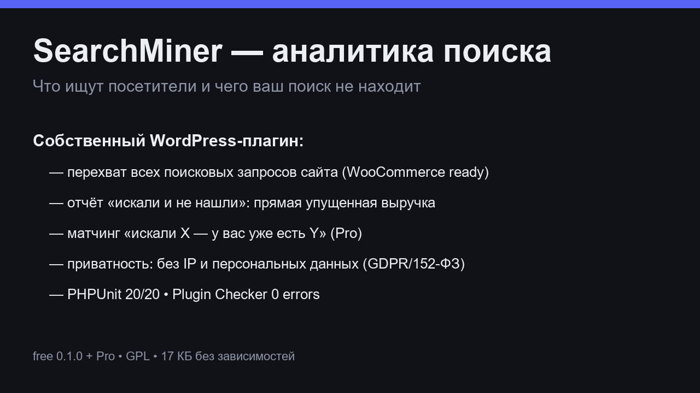

SearchMiner — лёгкий плагин WordPress: записывает каждый поисковый запрос, находит «нулевые» запросы и подсказывает, какой контент или товар добавить.
WordPress 5.2+ • PHP 7.2+ • без внешних сервисов • не сохраняет IP

| Free | Pro | |
|---|---|---|
| Аналитика запросов и «нулевых» запросов | ✓ | ✓ |
| Дашборд, топ запросов, динамика по дням | ✓ | ✓ |
| WooCommerce: учёт поисков по товарам | ✓ | ✓ |
| Выручка под риском: нулевой запрос → существующий товар | — | ✓ |
| Недельный дайджест на email | — | ✓ |
| Кластеризация опечаток (кириллица и латиница) | — | ✓ |
| Цена | 0 ₽ | 2 990 ₽ / год |
Pro — компаньон-плагин к бесплатной версии. Одна лицензия на один сайт.
Нет. Запись поиска — один лёгкий запрос к вашей же базе, крон раз в сутки чистит старое. Работает с LiteSpeed Cache, WP Super Cache, Autoptimize.
Никуда. SearchMiner не отправляет ничего наружу — вся аналитика живёт в вашей базе данных.
Скачайте zip → Плагины → Добавить новый → Загрузить плагин → Активировать. Раздел появится в меню админки.
IP не сохраняется, персональные данные не записываются, экспорта наружу нет.
SearchMiner is a lightweight WordPress plugin: it records every search query, spots zero-result searches, and tells you which content or product to add next.
WordPress 5.2+ • PHP 7.2+ • no external services • no IP storage
| Free | Pro | |
|---|---|---|
| Query & zero-result analytics | ✓ | ✓ |
| Dashboard, top queries, daily trend | ✓ | ✓ |
| WooCommerce product-search awareness | ✓ | ✓ |
| Revenue at risk: zero query → matching product | — | ✓ |
| Weekly email digests | — | ✓ |
| Typo clustering (multibyte Levenshtein) | — | ✓ |
| Price | Free | $29 / year |
Pro is a companion plugin on top of the free version. One license per site.
No. Recording a search is one lightweight insert into your own database; a daily cron prunes old rows. Tested with LiteSpeed Cache, WP Super Cache, Autoptimize.
Nowhere. SearchMiner sends nothing externally — all analytics live in your database.
Download the zip → Plugins → Add New → Upload Plugin → Activate. A SearchMiner menu appears in wp-admin.
No IPs stored, no personal data recorded, nothing exported.